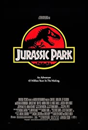

- Director
- Jon Favreau
- Genre
- Action, Adventure, Sci-Fi
- Plot Outline
- After being held captive in an Afghan cave, billionaire engineer Tony Stark creates a unique weaponized suit of armor to fight evil. (more)

- Director
- Francis Ford Coppola
- Genre
- Crime, Drama
- Plot Outline
- The aging patriarch of an organized crime dynasty transfers control of his clandestine empire to his reluctant son. (more)

- Director
- Steven Spielberg
- Genre
- Action, Adventure, Sci-Fi
- Plot Outline
- A pragmatic paleontologist visiting an almost complete theme park is tasked with protecting a couple of kids after a power failure causes the park's cloned dinosaurs to run loose. (more)
 Sad:
Sad: